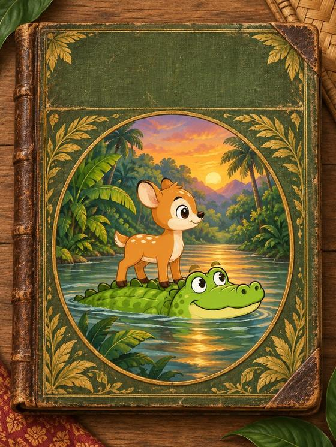

Baca buku penuh dalam aplikasi KancilSetiap sungai yang diseberangi membuka satu halaman baharu. Every river you cross in the Kancil app unlocks a new page. getkancil.app
Muat turun Kancil secara percuma Download Kancil free

Kisah Sang Kancil, diceritakan semula untuk kanak-kanak. The Sang Kancil folk tales, retold for kids.
Muat turun Kancil secara percuma Download Kancil free
Your notes are saved in this browser. Copy them and paste them back to Claude.